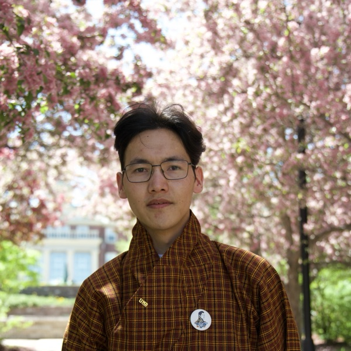

Hi there,
I'm Tashi.
Welcome to my personal space
on the internet.

I am a physicist and teacher based in Thimphu, Bhutan. I currently teach Grade 11 physics and work as a researcher at the Druk Gyalpo Institute, where I think about assessment and curriculum design.
My interests sit at the intersection of AI, physics, and education. Over time I hope to go deeper into quantum physics — quantum information, quantum computing, or quantum field theory.
I received my BSc in Mathematics–Physics (First Class Honours) from the University of New Brunswick, Canada, where I worked at the UNB MRI Research Centre with Bruce Balcom on non-invasive conductivity measurement.
a [CV] (last updated March 2026)
contact
The best way to reach me is by email: tashiwangchuk@academy.bt.